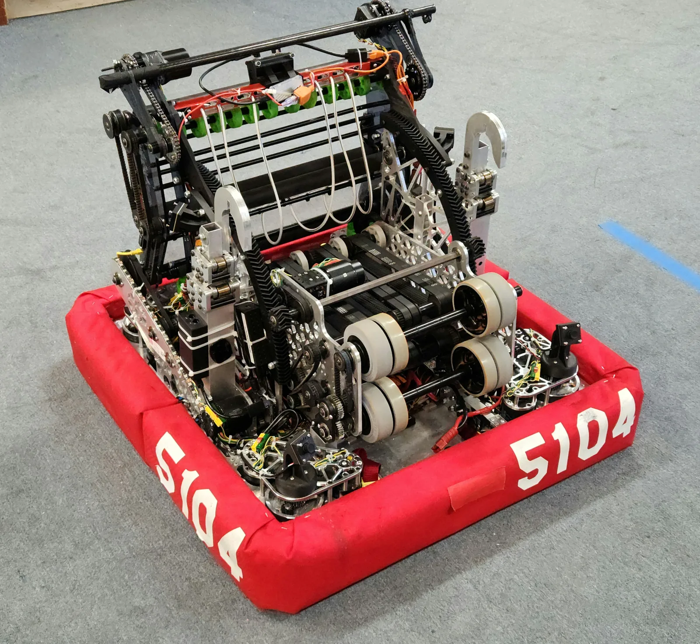

Typhoon
FIRST Robotics Competition: Crescendo
My Role
Co-Captain, Manufacturing Lead, and Drive Coach. I designed, CAD'd, and machined the intake pivot and intake, and CAM'd and machined a large share of the structural parts.

The team redesigned the amp mechanism midseason because shots that worked on our practice amp missed on the competition field's different material.
My work
- Intake constraints: fit inside the frame perimeter, limit pivot backlash, and keep the intake light enough for the pivot's gear ratio
- Manufacturing subteam grew to 15+ machinists
- Led all technical meetings and robot assembly
- Pre-match and in-match strategy with the alliance's other two drive coaches
Team systems
- SDS swerve drive, two-button teleop controls, ML-powered note tracking, and multi-note autonomous routines
- Redesigned amp mechanism also fit under the stage and chain
Awards
- Regional Finalist: Monterey Bay Regional